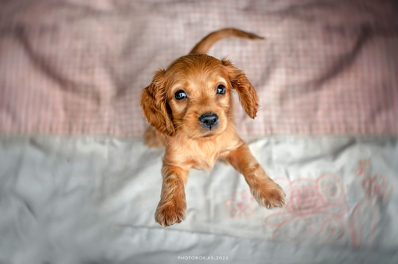
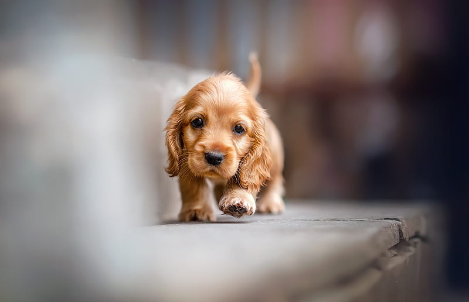

Web Cocker
Imágenes de Cockers

Amor/Odio
Lista hecho por Andrea García
Cosas que los cockers aman
- Jamón
- Cama
- Sol


Cosas que los cockers odian
- Juguetes
- Verduras
- Cepillarse


Personalidad
Estos perros activos y amistosos necesitan la compañía humana para sentirse bien y quieren complacer a sus amos más que nada. Son perros ideales para hogares con niños y se llevan bien con los demás animales domésticos. El cocker es un perro muy feliz que mueve la cola y lleva «regalos» a todo el mundo
Origen
El cocker inglés es uno de los tipos más antiguos de spaniels de tierra. Sus orígenes se remontan al siglo XIV en España. Antes del siglo XVII, todos los tipos de spaniel se incluían en la misma categoría: los más grandes se usaban para levantar la caza y los más pequeños para hacer salir a las perdices
Aseo
Debes cepillarle el pelo varias veces a la semana y revisarle las orejas con regularidad para que estén limpias y sanas. Deberás llevarlo a un peluquero canino 3 o 4 veces al año para que le quite del pelo sobrante, el llamado stripping. Aun así, si te es posible, pues aprender a hacerlo tú mismo.
Encuentra más información la imagen o en este link

¿Tu cocker es cachorro o adulto?
¿Que tipo de cocker es el tuyo?